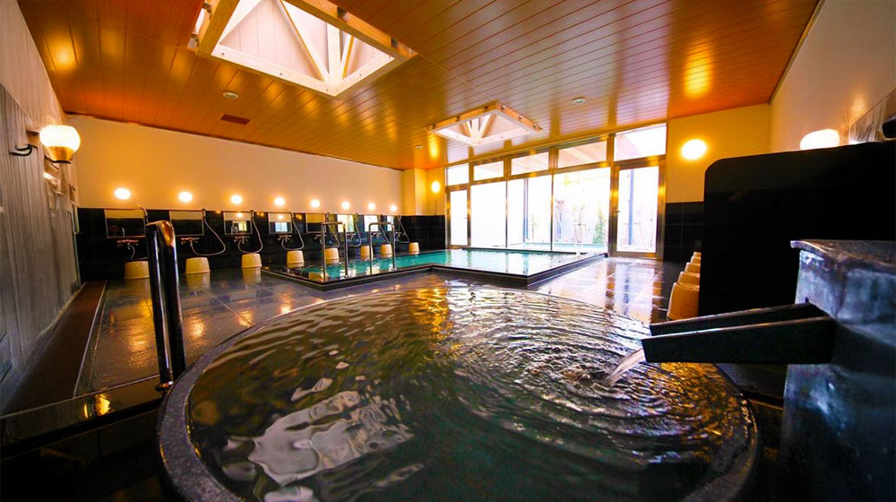

西浦エリア

らららサンビーチ
営業時間：平・休日 8:30～17:00
定休日：---
らららサンビーチは、海水浴と磯遊びが一緒にできる、他には類を見ない新しい人工の海浜施設です。 白い砂浜は、遠浅で水質もよく、正面に広がる海越しの富士山の眺望は絶景です。


駿陽荘 やま弥
営業時間：お食事11:30～14:00
定休日：水・第1,3火曜日
静岡の沼津にある富士山の見える宿やま弥では、駿河湾と富士山を望む素晴らしい景色とともに天気の良い日は、全部屋から富士山を一望することができます。お料理では、生で食べることもできる新鮮なイカをしゃぶしゃぶとしてお召し上りいただく、イカのしゃぶしゃぶや、やま弥の隠れた名物、鯵のたたきの味噌和えのなめろう丼などをお召し上がりいただくことができます。また、沼津の市場で仲買をしている店主目利きの真鯛・伊勢海老・アワビなどの地魚料理を磯の香り高い海苔で巻いて召し上がっていただくとで、さらに食べやすくした「てまきずし」もオススメです。当館で海の幸を思う存分お召し上がり下さい。

大瀬神社
営業時間：24時間
定休日：---
駿河湾漁民の信仰の象徴である大瀬神社は海の守護神として知られています。古くから漁民の描いた絵馬や漁船模型が多数奉納されており、県の指定有形民俗文化財に指定されている歴史的にも貴重なものです。また大瀬神社に奉納された絵馬は、駿河湾漁民の暮らしぶりを知る上で貴重な物です。 今でも鮮やかに当時の様子を再現してくれます。未来に残したい漁業漁村の歴史文化財産百選に選ばれました！

道の駅くるら戸田
営業時間：平・休日 10:00～18:00
定休日：---
くるら戸田は沼津市戸田にある道の駅です。日帰り温泉やくるら戸田オリジナルのお土産などをご用意しております。戸田にお越しの際にはぜひご利用下さい。
オーシャンビューフジミ
営業時間：平日10:30～14:30 休日10:00～14:30
定休日：土・日・祝
ダイバーの方も観光の方も、あなただけの海の休日を。ダイビング仲間と楽しいひとときとおしゃべりができる素敵な空間です。西伊豆大瀬崎ビーチの正面中央にあり、湾内を潜るにも外海を潜るにも近くて便利です。部屋からは駿河湾や沼津市街が見渡せとても景色がいい場所です。
大瀬館
営業時間：平・休日8:00～18:00
定休日：---
70年前、「この浜辺をみんなに楽しんでもらいたい」と海の家から始まった旧・大瀬館創業者の思いを引継ぎ、ゲストの皆さまが「安全安心で居心地良く無邪気になれる場」を目指します。ネイチャーイン大瀬館のスタッフ一同心より皆さまのお越しをお待ちしております。
海のステージ。
営業時間：平・休日10:00～18:00
定休日：木曜日
コーヒーやランチの美味しい海沿いのお店です。店内にはかつて木負湾にあったフローティングホテル『スカンジナビア』の資料館があります。テラス席では海越しの富士山が見え、絶景ポイントです。潮が引いている時間は磯遊びもできます。わんちゃん連れOK。時期になるとみかん狩りもできます。ぜひお越しください。
旅館 はまゆう荘
営業時間：平・休日9:00～17:00
定休日：不定休
駿河湾に突き出た自然豊かな岬「大瀬崎」。当館は海の目の前に立つオーシャンビューの宿です。田舎に帰ったような安らぎと、心温まるひとときをご提供いたします。四季折々の雄大な富士を望む絶景を大瀬崎の波の音とともにご堪能ください。
はごろも荘
営業時間：平・休日8:00～17:00
定休日：---
目の前に広がる駿河湾の海の青さや富士山や山々の自然を満喫し、ごゆっくりとおくつろぎ下さいませ。
有限会社 大谷油店
営業時間：平・休日8:00～19:30
定休日：木曜日
内浦から大瀬崎に向かう途中にあるガソリンスタンドです。
戸田観光協会
営業時間：平・休日9:00～17:00
定休日：---
戸田（へだ）は沼津市の南部・西伊豆の海岸線に位置し、世界文化遺産に登録された富士山を駿河湾越しに眺められる絶好のロケーションです。また、世界最大のカニである「タカアシ（高足）ガニ」の料理も有名です。
尾鷲酒店
営業時間：平・休日9:00～17:00
定休日：不定休
お店は内浦地区から西浦地区、大瀬崎のほうにつながる海沿いの道にあります。お酒だけではなくソフトドリンクや調味料、生活消耗品なども揃う店内は、昔ながらの地域の酒屋さんです。
諸口神社
営業時間：24時間
定休日：---
諸口神社は、御浜岬の先端に鎮座しており、御浜岬と湾を挟んだ戸田の中心街からも、御浜岬にあるこの神社の赤鳥居が見えます。富士山を望む美しいロケーションです。航海、漁業者の守護神として厚く崇拝されています。